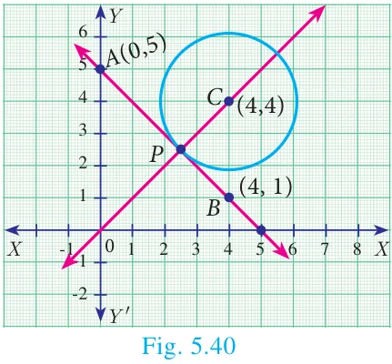
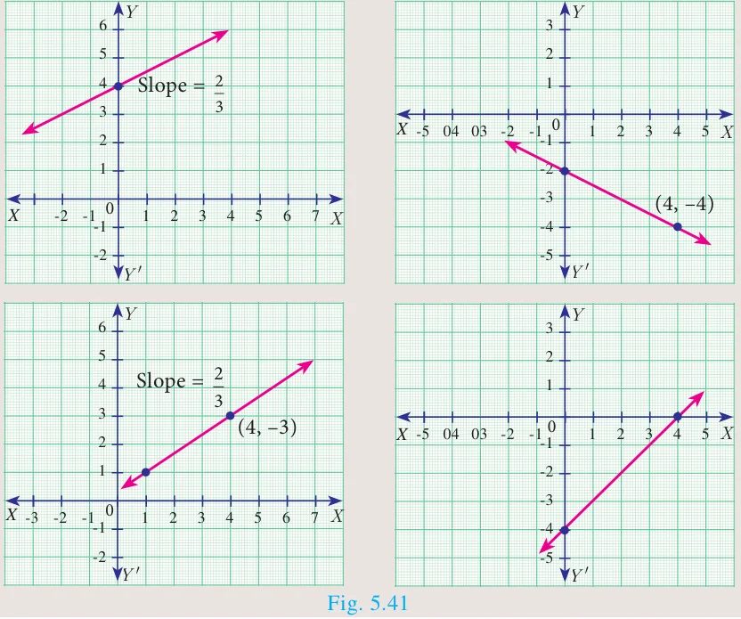

5.6 General Form of a Straight Line
The linear equation (first degree polynomial in two variables \(x\) and \(y\)) \(ax + by + c = 0\) (where \(a\), \(b\) and \(c\) are real numbers such that at least one of \(a\), \(b\) is non-zero) always represents a straight line. This is the general form of a straight line.
Now, let us find out the equations of a straight line in the following cases
- parallel to \(ax + by + c = 0\)
- perpendicular to \(ax + by + c = 0\)
5.6.1 Equation of a line parallel to the line \(ax + by + c = 0\)
The equation of all lines parallel to the line \(ax + by + c = 0\) can be put in the form \(ax + by + k = 0\) for different values of \(k\).
5.6.2 Equation of a line perpendicular to the line \(ax + by + c = 0\)
The equation of all lines perpendicular to the line \(ax + by + c = 0\) can be written as \(bx - ay + k = 0\) for different values of \(k\).
Do you know?
Two straight lines \(a_1x + b_1y + c_1 = 0\) and \(a_2x + b_2y + c_2 = 0\) where the coefficients are non-zero, are
- parallel if and only if \(\dfrac{a_1}{a_2} = \dfrac{b_1}{b_2}\); That is, \(a_1b_2 - a_2b_1 = 0\)
- perpendicular if and only if \(a_1a_2 + b_1b_2 = 0\)
Progress Check
Fill the details in respective boxes
| No. | Equations | Parallel or perpendicular |
|---|---|---|
| 1 | \(5x + 2y + 5 = 0\) \(5x + 2y - 3 = 0\) | |
| 2 | \(3x - 7y - 6 = 0\) \(7x + 3y + 8 = 0\) | |
| 3 | \(8x - 10y + 11 = 0\) \(4x - 5y + 16 = 0\) | |
| 4 | \(2y - 9x - 7 = 0\) \(27y + 6x - 21 = 0\) |
5.6.3 Slope of a straight line
The general form of the equation of a straight line is \(ax + by + c = 0\). (at least one of \(a\), \(b\) is non-zero)
coefficient of \(x = a\), coefficient of \(y = b\), constant term \(= c\).
The above equation can be rewritten as \(by = -ax - c\)
\(\text{gives } y = -\dfrac{a}{b}x - \dfrac{c}{b}, \text{ if } b \neq 0 \qquad \ldots(1)\)
comparing (1) with the form \(y = mx + l\)
\(\text{We get, slope } m = -\dfrac{a}{b}\)
\(m = \dfrac{-\text{coefficient of } x}{\text{coefficient of } y}\)
\(y \text{ intercept } l = -\dfrac{c}{b}\)
\(y \text{ intercept} = \dfrac{-\text{constant term}}{\text{coefficient of } y}\)
Thinking Corner
How many straight lines do you have with slope 1?
Example 5.30
Find the slope of the straight line \(6x + 8y + 7 = 0\).
Solution
Given \(6x + 8y + 7 = 0\)
\(\text{slope } m = \dfrac{-\text{coefficient of } x}{\text{coefficient of } y} = -\dfrac{6}{8} = -\dfrac{3}{4}\)
Therefore, the slope of the straight line is \(-\dfrac{3}{4}\).
Example 5.31
Find the slope of the line which is
(i) parallel to \(3x - 7y = 11\) (ii) perpendicular to \(2x - 3y + 8 = 0\)
Solution
(i) Given straight line is \(3x - 7y = 11\)
\(\Rightarrow 3x - 7y - 11 = 0\)
\(\text{Slope } m = \dfrac{-3}{-7} = \dfrac{3}{7}\)
Since parallel lines have same slopes, slope of any line parallel to \(3x - 7y = 11\) is \(\dfrac{3}{7}\).
(ii) Given straight line is \(2x - 3y + 8 = 0\)
\(\text{Slope } m = \dfrac{-2}{-3} = \dfrac{2}{3}\)
Since product of slopes is \(-1\) for perpendicular lines, slope of any line perpendicular to \(2x - 3y + 8 = 0\) is \(\dfrac{-1}{\frac{2}{3}} = \dfrac{-3}{2}\)
Example 5.32
Show that the straight lines \(2x + 3y - 8 = 0\) and \(4x + 6y + 18 = 0\) are parallel.
Solution
Slope of the straight line \(2x + 3y - 8 = 0\) is
\(m_1 = \dfrac{-\text{coefficient of } x}{\text{coefficient of } y}\)
\(m_1 = \dfrac{-2}{3}\)
Slope of the straight line \(4x + 6y + 18 = 0\) is
\(m_2 = \dfrac{-4}{6} = \dfrac{-2}{3}\)
\(\text{Here, } m_1 = m_2\)
That is, slopes are equal. Hence, the two straight lines are parallel.
Aliter
\(a_1 = 2,\ b_1 = 3\)
\(a_2 = 4,\ b_2 = 6\)
\(\dfrac{a_1}{a_2} = \dfrac{2}{4} = \dfrac{1}{2}\)
\(\dfrac{b_1}{b_2} = \dfrac{3}{6} = \dfrac{1}{2}\)
\(\text{Therefore, } \dfrac{a_1}{a_2} = \dfrac{b_1}{b_2}\)
Hence the lines are parallel.
Example 5.33
Show that the straight lines \(x - 2y + 3 = 0\) and \(6x + 3y + 8 = 0\) are perpendicular.
Solution
Slope of the straight line \(x - 2y + 3 = 0\) is
\(m_1 = \dfrac{-1}{-2} = \dfrac{1}{2}\)
Slope of the straight line \(6x + 3y + 8 = 0\) is
\(m_2 = \dfrac{-6}{3} = -2\)
\(\text{Now, } m_1 \times m_2 = \dfrac{1}{2} \times (-2) = -1\)
Hence, the two straight lines are perpendicular.
Aliter
\(a_1 = 1,\ b_1 = -2;\)
\(a_2 = 6,\ b_2 = 3\)
\(a_1a_2 + b_1b_2 = 6 - 6 = 0\)
The lines are perpendicular.
Example 5.34
Find the equation of a straight line which is parallel to the line \(3x - 7y = 12\) and passing through the point \((6, 4)\).
Solution
Equation of the straight line, parallel to \(3x - 7y - 12 = 0\) is \(3x - 7y + k = 0\)
Since it passes through the point \((6, 4)\)
\(3(6) - 7(4) + k = 0\)
\(k = 28 - 18 = 10\)
Therefore, equation of the required straight line is \(3x - 7y + 10 = 0\).
Example 5.35
Find the equation of a straight line perpendicular to the line \(y = \dfrac{4}{3}x - 7\) and passing through the point \((7, -1)\).
Solution
The equation \(y = \dfrac{4x}{3} - 7\) can be written as \(4x - 3y - 21 = 0\).
Equation of a straight line perpendicular to \(4x - 3y - 21 = 0\) is \(3x + 4y + k = 0\)
Since it is passes through the point \((7, -1)\),
\(21 - 4 + k = 0 \quad \text{we get, } k = -17\)
Therefore, equation of the required straight line is \(3x + 4y - 17 = 0\).
Example 5.36
Find the equation of a straight line parallel to \(Y\) axis and passing through the point of intersection of the lines \(4x + 5y = 13\) and \(x - 8y + 9 = 0\).
Solution
\(\text{Given lines } 4x + 5y - 13 = 0 \qquad \ldots(1)\)
\(x - 8y + 9 = 0 \qquad \ldots(2)\)
To find the point of intersection, solve equation (1) and (2)
\(\begin{array}{ccccccc} & x & & y & & 1 & \\ 5 & & -13 & & 4 & & 5 \\ & \times & & \times & & \times & \\ -8 & & 9 & & 1 & & -8 \end{array}\)
\(\dfrac{x}{45 - 104} = \dfrac{y}{-13 - 36} = \dfrac{1}{-32 - 5}\)
\(\dfrac{x}{-59} = \dfrac{y}{-49} = \dfrac{1}{-37}\)
\(x = \dfrac{59}{37},\ y = \dfrac{49}{37}\)
Therefore, the point of intersection \((x, y) = \left(\dfrac{59}{37}, \dfrac{49}{37}\right)\)
The equation of line parallel to \(Y\) axis is \(x = c\).
It passes through \((x, y) = \left(\dfrac{59}{37}, \dfrac{49}{37}\right)\). Therefore, \(c = \dfrac{59}{37}\).
The equation of the line is \(x = \dfrac{59}{37} \Rightarrow 37x - 59 = 0\)
Example 5.37
The line joining the points \(A(0, 5)\) and \(B(4, 1)\) is a tangent to a circle whose centre \(C\) is at the point \((4, 4)\) find
- the equation of the line \(AB\).
- the equation of the line through \(C\) which is perpendicular to the line \(AB\).
- the coordinates of the point of contact of tangent line \(AB\) with the circle.
Solution

(i) Equation of line AB, \(A(0, 5)\) and \(B(4, 1)\)
\(\dfrac{y - y_1}{y_2 - y_1} = \dfrac{x - x_1}{x_2 - x_1}\)
\(\dfrac{y - 5}{1 - 5} = \dfrac{x - 0}{4 - 0}\)
\(4(y - 5) = -4x \Rightarrow y - 5 = -x\)
\(x + y - 5 = 0\)
(ii) The equation of a line which is perpendicular to the line \(AB\): \(x + y - 5 = 0\) is \(x - y + k = 0\)
Since it is passing through the point \((4, 4)\), we have
\(4 - 4 + k = 0 \Rightarrow k = 0\)
The equation of a line which is perpendicular to \(AB\) and through \(C\) is \(x - y = 0\)
(iii) The coordinate of the point of contact \(P\) of the tangent line \(AB\) with the circle is point of intersection of lines.
\(x + y - 5 = 0 \text{ and } x - y = 0\)
\(\text{solving, we get } x = \dfrac{5}{2} \text{ and } y = \dfrac{5}{2}\)
Therefore, the coordinate of the point of contact is \(P\left(\dfrac{5}{2}, \dfrac{5}{2}\right)\).
Thinking Corner
- Find the number of point of intersection of two straight lines.
- Find the number of straight lines perpendicular to the line \(2x - 3y + 6 = 0\).
Activity 6
Find the equation of a straight line for the given diagrams
